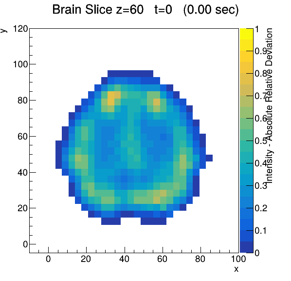

This is an animation realized by swapping the images in script ./nswap
Image c2.png is shown, but each second a new image is named c2.png
This file has in <head>>
<meta http-equiv="refresh" content="1">
The "1" can be changed to any number of seconds
================================

system calls in the root_to_webN.C